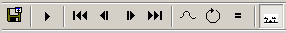

ANYMATE - Animate Handle Graphics objects
Contents
Overview
ANYMATE analyzes the changes in the properties of Handle Graphics objects and interpolates between these changes to generate smooth transitions between each given state, here called a break. To generate an animation, ANYMATE collects the property values of all Handle Graphics objects for each break and then weeds out unchanged properties, keeping only the true changes between the breaks.
The resulting figure window, holding the animation, is not a Matlab movie, but is made up of the same kinds of objects that constituted the original figures. This means that it is possible to e.g. zoom, pan or rotate the axes of an animation, even while the animation is running. Generally, all objects of a running animation figure can be treated just like the objects of any other figure. Properties not participating in the animation can be changed at will and new objects, such as lights, can be added. A running animation can even be edited with the plot editor. In fact, animations run completely in the background and any command can be entered as usual in Matlab's command line.
It is possible to move manually between breaks by dragging the timeline at the bottom of the animation figure. Breaks can be rearranged and given meaningful labels on the timeline in case the breaks in reality didn't correspond to different points in time, but instead where e.g. the result of different inputs to a function.
Animations can be saved as ordinary fig-files, reloaded and restarted later, without the need for original data. If the animation is saved in a running state, it will show up running when opened. This makes it possible to quickly bring up an animation for a presentation, even if it was time consuming to calculate the individual breaks.
Animations can also be saved as gif-, avi- and, if run under Windows and the MS WMEncoder is installed, also as wmv-files. However, when saved in these formats, the ability to change the individual properties of animated objects is of course lost.
Example - peaks
It is easy to create an animation with ANYMATE. The basic animation at the top was created with only two lines of code:
p=peaks; h=anymate(@surf, cat(3, p, rot90(p,1), rot90(p,2), rot90(p,3)));
To make it more interesting, a light was added and interpolated shading and gouraud lighting were applied.
camlight set(h, 'FaceColor', 'interp', 'FaceLighting', 'gouraud');
Editing the timeline
By default, the timeline labels are just the break numbers. To change the labels manually, edit them just as ordinary text objects are edited in the plot editor; double-click on the label, edit the text in-place and press ESC to end editing. If the new label interferes with neighboring labels, the timeline is automatically rescaled to accommodate the new label. Be prepared for a delay the first time you double-click on label. Matlab will take a moment for loading a lot of java code needed for the editing. Be patient!
Breaks can be rearranged by doing a right-click-and-hold, (Command-click-and-hold on a Mac?), on a label, dragging it to its new position and then releasing the mouse button. This can be done even in a running animation.
Breaks can temporarily be disabled by right-clicking the corresponding label and choosing Hide from the context menu. By choosing Reset, all original breaks are reactivated and the original order between breaks are restored.
If a time specification is supplied when ANYMATE is called, the order between breaks can not be altered, but they still can be disabled in the animation.
Example - membrane
ANYMATE can look for good candidates for an animation by itself, such as:
figure; membrane(4); figure; membrane(6); anymate;
After some manual editing of the timeline, as described above, the resulting animation becomes:
Example - mri image
ANYMATE can animate images with the same ease:
load mri anymate(@imagesc,D); axis image off colormap(gray);
Using the toolbar
Animations can be controlled by a toolbar in the animation window.

The toolbar buttons are from left to right:
- Save as gif, avi or wmv
- Start/stop animating
- Go to first break
- Go to previous break
- Go to next break
- Go to last break
- Toggle between linear and pchip interpolation
- Toggle between ping-pong and circular loop
- Pop up a settings dialog for setting e.g. frame rate
- Toggle timeline visibility
Working with ANYMATE
A first time user of ANYMATE probably see ANYMATE mainly as a tool for creating animations to visualize time-depending processes. While ANYMATE certainly is a potent tool for this purpose, it has many other uses.
The author's main use of ANYMATE is to examine changes in multi-dimensional data sets. It can be very hard to detect where and how much data changes between different states of a process just by comparing e.g. two surf-plots of the data. Since it is possible to change the view of the data while the data is "moving" between the two states, it is a lot easier to locate and quantify differences.
ANYMATE can also turn the mixed blessing of auto scaling into a purly beneficial feature. It can be hard to compare auto-scaled plots, since all of the cartesian axes, color axis and alpha axis can change between the plots. By default, ANYMATE will record the various axis settings and, before the animation begins, set limits that will encompass all the individual limits. This can be regarded as a super auto scaling.
In the examples here, the function given as the first argument to ANYMATE is often a simple Matlab graphics primitive. In actual work, this function is normally much more elaborate. It can be any function, as long as it produces some graphics and returns handles to the objects created.
The author has often used ANYMATE in live presentations, taking advantage of ANYMATE's capability to quickly load animations from fig-files. Remember though, that animations saved as fig-files are somewhat volatile, in that they might depend on a certain version of ANYMATE and possibly also the Matlab version. The reason for this is that the inner structure of ANYMATE is reflected inside the fig-file and the author wants the freedom to change this inner structure in future versions. So, before an important presentation, make sure your fig-files are up-to-date!
The upper limit of the frame rate depends on how much data ANYMATE must handle and how demanding the graphic rendering is. (E.g. Phong lighting can bring down a seemingly simple graphic to a crawl). In these cases, ANYMATE can still be used to effortlessly produce an "ordinary" animation as a gif or avi file.
Depending on the objects, some animations will cause the screen to flicker. The remedy is to enable the figure's DoubleBuffer, as
set(gcf,'DoubleBuffer', 'on')
It is the author's firm belief, that GUIs should be as state-less as possible. Therefore, almost anything is allowed to change anytime. This has occasionally required some fancy footwork in the code, and although great effort has been made to make the program robust and make sure nothing is left behind after an animation, there still might be sequences that leads to erroneous behaviour. Please alert the author via mail, if such a sequence is found.
Example - Super Auto Scaling
Set up some screen positions for this demo
sz=get(0,'ScreenSize');
w2=sz(3)/2;
h2=sz(4)/2;
pos={
[ 1 h2 w2 h2]
[w2 h2 w2 h2]
[ 1 1 w2 h2]
[w2 1 w2 h2]
};
Create four figures holding plots with different ranges. Position them so they can be viewed together. Let the plots have unique titles. Notice how the plots have different Y-axis limits and how this makes them hard to compare.
t={'Alpha' 'Beta' 'Gamma' 'Theta'};
for i=1:4
figure('OuterPosition', pos{i});
plot(1000*rand*rand(1,10));
title(sprintf(t{i}));
end
Call ANYMATE and position the resulting animation in the center.
anymate;
set(gcf, 'OuterPosition', [[w2 h2]/2 w2 h2]);
ANYMATE found the four figures and used the different titles as labels on the time line, using the order of figure handles. The Y-axis limits are set so that all plots are shown in the same scale. By clicking Go to next break, dragging the timeline or clicking Play, the other plots can be viewed.
If the order of plots are important, or only specific figures are of interest, the figure handles can be entered as an argument to ANYMATE as in
anymate([3 2 4]);
More Examples
What follows are some one-, two- or few-liners that are somewhat constructed, but shows the generality of ANYMATE and maybe can inspire to the use of it. Execute the animations, play around with the toolbar and try out the different things there are to do with the timeline. All examples can also be viewed by issuing
help anymate
anymate(@plot,rand(5,5));
anymate(@plot,rand(5,5,5), 'Play', true);
h=anymate(@(x,y)plot(x,y,'.'),rand(5,5,2), 'Spread', true); set(h, 'MarkerSize', 20);
h=anymate(@(x,y,z)plot3(x,y,z,'.'),rand(5,5,5,3), 'Spread', true); set(h, 'MarkerSize', 20);grid
anymate(@surf,rand(5,5,5))
[x,y,z]=sphere;
anymate(@surf,{cat(3,x,.2*x+1) cat(3,y,y) cat(3,z,2*z)});
colormap(jet);
anymate(@bar3,rand(3,4,5))
Define following function in its own file doplot.m
function h=doplot(x1,x2) subplot(121); h(1)=plot(x1); subplot(122); h(2)=surf(x2); end % Then, at the commandline, do: anymate(@doplot,{rand(4,5) rand(4,3,5)});
Varia
Mathworks distinguishes between movies and animations. In their Movie and Animation Guide , they state that "Animation is not the same thing as playing a movie. MOVIE is a command that plays pre-recorded information. Animation is the process of continuously drawing and/or changing an object." With this defininition, ANYMATE falls somewhere in between. The author felt that ANYMATE was a bit closer to animation and let the name reflect that belief.
Limitations
If available, ANYMATE uses the RGB2IND routine of the Image Processing Toolbox for converting truecolor images to indexed color when creating GIF files. If IPT is not installed, it will use the very crude RGB2IND256 supplied internally within ANYMATE.
ANYMATE handles animations where data values change, while the amount of data is constant. It can e.g. readily animate changes in pixel values of an image, but, not directly, changes to the size of the image. In many cases, however, this can be handled by filling data with Nan:s, since most Handle Graphics objects render Nan:s transparent. It does make the animation more complicated though.
Even harder to get around is ANYMATE's requirement that the number of handles must be fixed. Some Matlab functions return handles to various line or patch objects where the number of objects varies with data. Such plots are hard, if not impossible, to animate with ANYMATE. As an example of this, exchange the surf in the first example with surfc:
p=peaks; h=anymate(@surfc, cat(3, p, rot90(p,1), rot90(p,2), rot90(p,3)));
The surface is still OK, but the contours at the bottom are not correctly rendered.
Since ANYMATE treats each property of an object independently and interpolate each property linearly, it can not animate circular movements with any accuracy, since the position of an object is given in cartesian coordinates. Intrinsic angular properties can be animated though, most notably the View property of axes.
Gotchas
Animated objects all have their 'CreateFcn' callback set. This is needed to get valid handles when being recreated from file. However, these callbacks will also be triggered if e.g. a copy of an animated axes is made with copyobj into another figure. When this happens, the copied objects move with the timeline in the original figure, while objects in the original figure are static! To create a copy, you must first save all the 'CreateFcn's, set them to empty, do the copy and then restore the 'CreateFcn's. There is a function copyobjnc, "hidden" within anymate.m, that does just that. If needed, extract this function into its own file.
ANYMATE collects all data as class single. This means that uint8 images will require four times the amount of data when used in an animation, compared to a single instance of the image. If the image is big, the storage requirements grows very quickly when adding breaks. If you run out of memory, try changing the interpolation method to linear by anymate(..., 'method', 'linear').
ANYMATE does not work well together with Matlab's camera toolbar, because there are no means for negotiating control over parts of a figure with it. When a camera toolbar mode is active, the timeline can not be manually dragged nor edited.
About ANYMATE
The author of ANYMATE i Jerker Wågberg. Contact information:
Jerker Wågberg More Research SE-891 80 SWEDEN E-mail: jerker dot wagberg (at) more dot se Tel: +46 660 75094
Terms of use
ANYMATE was written by Jerker Wågberg, More Research, Sweden. It is hereby released as free software. You can use it as you please as long as you don't claim you wrote it, but instead give the author due credit. If used in public and you're not comfortable with pronouncing the author's first name, you can try to pronounce it in Swedish; Yeahrker ...
Appendix 1 - Data arguments
When using ANYMATE with a function handle and data as arguments,
h=anymate(@fun, data, ...);
there are a number of ways to organize data, depending on the complexity of data and the number of input arguments to fun. For any non-cell argument data, ANYMATE will assume that the last dimension corresponds to different breaks. If the size of the last dimension is B (B for Breaks), fun will be called B times, with arguments:
fun(data(:,:,...,1));
fun(data(:,:,...,2));
...
fun(data(:,:,...,B));
If fun has more than one input argument, but with the same sizes and types, the 'Spread' option can be used to distribute data. With the call
anymate(@fun, data, 'Spread', true)
the last dimension corresponds to the input arguments of fun, while now the penultimate dimension of data corresponds to the number of breaks. If data is e.g. an M-by-N-by-B-by-A non-cell matrix (A for Arguments), fun will be called B times, with arguments:
fun(data(:,:,1,1), data(:,:,1,2), ..., data(:,:,...,1,A));
fun(data(:,:,2,1), data(:,:,2,2), ..., data(:,:,...,2,A));
...
fun(data(:,:,B,1), data(:,:,B,2), ..., data(:,:,...,B,A));
If the input arguments to fun have different sizes and/or types, as in the last example above, data can be organized as a 1-by-A cell row vector, where each column corresponds to an input argument of fun and the last dimension of each cell contents corresponds to breaks. In this case the call sequence would be
fun(data{1}(:,:,1), data{2}(:,:,1), ..., data{A}(:,:,...,1));
fun(data{1}(:,:,2), data{2}(:,:,2), ..., data{A}(:,:,...,2));
...
fun(data{1}(:,:,B), data{2}(:,:,B), ..., data{A}(:,:,...,B));
There is a convenient exception to the above rule when data is a cell string vector. In this case, fun is assumed to have only one input argument, accepting a char array. For example,
data={'test1.mat', 'test2.mat', 'test3.mat'};
anymate(@fun, data);
will lead to fun being called three times, as:
fun('test1.mat'); fun('test2.mat'); fun('test3.mat');
The most general form is to have data as a B-by-A cell array, where the rows of data correspond to breaks and the columns correspond to input arguments of fun. In this case call sequence would be:
fun(data{1,1}, data{1,2}, ..., data{1,A});
fun(data{2,1}, data{2,2}, ..., data{2,A});
...
fun(data{B,1}, data{B,1}, ..., data{B,A});